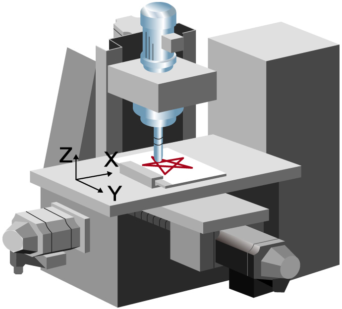
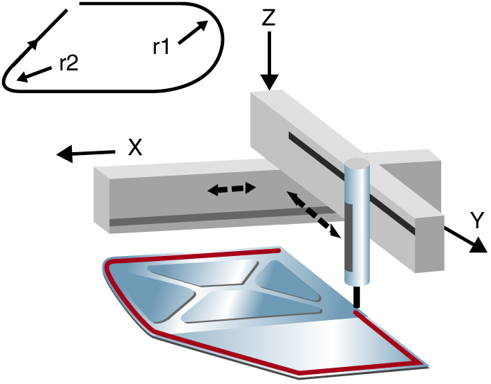

Controllers MELSEC-L Series
Fitur Produk -Gerakan Sederhana/Posisi-

Banyak sekali aplikasi yang dapat dilakukan<sup>LD77MS□</sup>
Berbagai jenis kontrol termasuk kontrol posisi, kontrol kecepatan-torsi, kontrol sinkron, dan kontrol cam elektronik dapat diimplementasikan dengan mudah dengan pengaturan parameter sederhana dan program sekuensi.
Positioning Control
- Dukungan untuk berbagai aplikasi berkat beragam format kontrol termasuk kontrol interpolasi linear (hingga 4 sumbu), kontrol interpolasi melingkar 2 sumbu, kontrol umpan tetap, dan kontrol orbit kontinu.
- Gunakan program sekuens untuk mengatur alamat pemosisian, kecepatan, dll. untuk pengoperasian otomatis yang mudah.
- Implementasi fungsi tambahan yang kuat dengan cepat seperti operasi langkah, perubahan posisi target, kode M, dan fungsi lewati.
| XY table | Sealant application |
|---|---|

|

|
Kontrol kecepatan-torsi
- Aplikasi kontrol tegangan seperti penggulungan dan penggulungan ulang didukung.
- Beralih dari kontrol posisi, ke kontrol kecepatan-torsi, dan kembali ke kontrol posisi.
Karena lokasi saat ini dilacak bahkan dalam mode kontrol kecepatan-torsi, maka posisi absolut saat ini dapat dipertahankan saat kembali ke kontrol posisi.
Kontrol sinkron dan kontrol cam elektronik
- Kontrol cam elektronik dapat digunakan sendiri atau dikombinasikan dengan kontrol sinkron.
Contoh aplikasi untuk kontrol cam elektronik:
Untuk membuat jalur gerakan di sekitar benda kerja menggunakan kontrol posisi, sumbu 2 menunggu sumbu 1 untuk menyelesaikan gerakan dari P1 ke P2 sebelum mulai bergerak dari P2 ke P3. Dengan menggunakan kontrol cam elektronik, sumbu 2 tidak perlu menunggu sumbu 1 untuk menyelesaikan gerakannya dan waktu di posisi dapat dipersingkat.
Banyak fungsi dalam desain yang ringkas<sup>LD77MS□</sup>
Gunakan encoder sinkron dengan kontrol sinkron
- Pulsa input dari encoder sinkron dapat digunakan untuk melakukan kontrol sinkron dan kontrol cam elektronik.
- Encoder sinkron inkremental dapat digunakan dengan menggunakan antarmuka bawaan LD77MS. Unit pilihan tidak diperlukan.
- Untuk lebih meningkatkan akurasi sinkronisasi, fungsi kompensasi fase, yang dirancang untuk mengompensasi penundaan encoder sinkron, dapat digunakan.
Fungsi deteksi tanda standar
- Antarmuka sinyal deteksi tanda bawaan memungkinkan unit ini digunakan dalam sistem pengemasan misalnya, tanpa modul pilihan tambahan.
Pembuatan data cam otomatis untuk pemotong putar
- Data cam yang rumit untuk pemotong putar dapat dibuat secara otomatis hanya dengan menentukan beberapa parameter seperti panjang lembar dan lebar sinkronisasi.
Kontrol sinkron yang sempurna mudah dicapai<sup>LD77MS□</sup>
Ganti roda gigi mekanis, poros, roda gigi pengubah kecepatan, cam, dll. dan hasilkan operasi kontrol sinkron menggunakan perangkat lunak.
- Program yang rumit tidak diperlukan untuk kontrol sinkron karena dapat diimplementasikan dengan mudah menggunakan pengaturan parameter.
- Mulai dan hentikan kontrol sinkron untuk setiap sumbu.
Gunakan sumbu kontrol sinkron dan sumbu kontrol posisi secara bersamaan. - Sampaikan nilai perjalanan poros utama ke sumbu keluaran melalui kopling.
Pengaturan Parameter Kontrol Sinkron
Kontrol cam dibuat sederhana<sup>LD77MS□</sup>
Buat pola data cam dengan mudah.
- Buat profil cam yang tidak dibatasi oleh konsep kontrol cam elektronik yang ada.
- Ubah akselerasi, kecepatan, gerakan, dan hentakan sambil melihat bagaimana hal itu memengaruhi profil.
- Periksa data cam yang dibuat dengan mudah dengan melihatnya sebagai gambar mini.
- Impor dan ekspor data cam dalam format CSV.
Data Kamera
Daftar Data Kamera
Penyederhanaan debugging dan komisioning<sup>LD77MS□</sup>
Fungsi osiloskop digital
- Pengumpulan data dari modul gerakan sederhana disinkronkan dengan siklus operasi dan tampilan bentuk gelombang untuk memfasilitasi permulaan yang efisien.
- Fungsi asisten menjelaskan setiap langkah.
- Gunakan pengaturan probe berbasis tujuan untuk mengatur data yang sering dilihat dengan mudah.
- Sampel data 16CH word dan 16CH bit dan tampilkan 8CH word dan 8CH bit secara real time.
Fungsi pemantauan dan pengujian
- Selesaikan instalasi sistem dan lakukan pemeriksaan operasional dengan mudah menggunakan fungsi monitor dan pengujian yang canggih.
- Pilih item yang akan ditampilkan di monitor menggunakan berbagai pilihan pemantauan informasi.
- Fungsi pengujian dapat digunakan untuk memeriksa operasi dasar tanpa program sekuens.